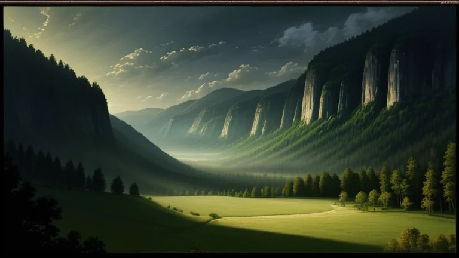

videoAssim foram acabados os céus e a terra, com todo o seu exército.01Video
A slideshow of painted scenes cut on sentence starts, with a slow zoom and a one-second crossfade, timed to the narration.
- Warm painterly style from DreamShaper 8 with LCM, 768×432, 6 steps
- Zoom in and out alternating, fades at the start and end
- A subtitle track inside the MP4, plus the SRT and WebVTT beside it